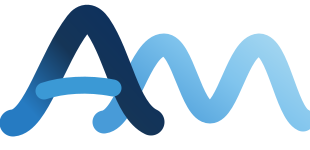

CONSULTORÍA EN INGENIERÍA AVANZADA
Simular para anticipar.
Analizar para decidir.
Transformamos desafíos mecánicos complejos en resultados claros mediante simulación numérica, dinámica estructural y análisis aplicado.
01 / SOBRE ALIMOTION
La ingeniería no termina en un resultado. Empieza con una mejor decisión.
Alimotion nace como una propuesta de consultoría mexicana especializada en simulación mecánica, dinámica y estructural. Integramos experiencia técnica internacional con un enfoque cercano a los retos de la industria en México.
Evaluamos comportamientos, exploramos alternativas de diseño y documentamos los límites de cada análisis para que los equipos de ingeniería dispongan de información útil y trazable.
Conversemos sobre tus necesidades ↗02 / LO QUE HACEMOS
Especialización que responde
a desafíos reales.
Siete áreas de simulación para evaluar desempeño, integridad y confiabilidad de sistemas mecánicos e industriales.
Simulación vibratoria
Identifica resonancias, amplitudes críticas y riesgos de vibración antes de fabricar o instalar.
Explorar especialidad 02Ruido y vibroacústicaSimulación acústica
Comprende cómo se generan, transmiten y radian las vibraciones que producen ruido.
Explorar especialidad 03Durabilidad y vida útilFatiga vibratoria
Evalúa el daño acumulado ante cargas cíclicas para orientar decisiones de rediseño y mantenimiento.
Explorar especialidad 04Integridad bajo sismoSimulación sísmica
Analiza la respuesta de equipos y estructuras frente a solicitaciones sísmicas especificadas.
Explorar especialidad 05Modelos contrastadosCorrelación cálculo–ensayo
Conecta los resultados de simulación con datos experimentales disponibles para reducir incertidumbres del modelo.
Explorar especialidad 06Evaluación frente a requisitosCalificación virtual
Traduce especificaciones técnicas y normativas aplicables en escenarios de cálculo trazables.
Explorar especialidad 07Equipos y tuberías de procesoSimulación Oil & Gas
Estudia integridad mecánica y riesgos de vibración en equipos, soportes y sistemas de tuberías.
Explorar especialidadNUESTRA PROPUESTA
Menos incertidumbre.
Más control sobre el diseño.
Anticipar riesgos
Identificar resonancias, concentraciones de esfuerzo y condiciones críticas de operación.
Optimizar antes de fabricar
Comparar cambios de masa, geometría, rigidez y condiciones de apoyo en un entorno virtual.
Respaldar decisiones
Entregar conclusiones documentadas, hipótesis explícitas y recomendaciones accionables.
03 / METODOLOGÍA
Un proceso claro.
Resultados que importan.
De la definición del problema al acompañamiento técnico: cada etapa responde a un objetivo verificable.
Comprender
Objetivo técnico, condiciones reales de servicio, datos disponibles y riesgos.
Delimitar
Alcance, hipótesis, materiales, cargas, criterios y entregables.
Simular
Modelado, mallado, resolución numérica y controles de calidad.
Interpretar
Resultados, sensibilidad, incertidumbres y alternativas de mejora.
Entregar
Informe técnico, visualizaciones, recomendaciones y revisión conjunta.
04 / INDUSTRIAS
Ingeniería aplicable
a múltiples sectores.
Servicios ajustados al entorno de operación y a los requisitos técnicos de cada proyecto.
Energía
Equipos e instalaciones expuestos a cargas dinámicas y exigencias de integridad.
Oil & Gas
Tuberías, skids, soportes y equipos mecánicos en procesos industriales.
Transporte y movilidad
Componentes sometidos a vibración, fatiga y excitaciones de servicio.
Manufactura
Optimización estructural, máquinas y validación virtual de productos.
Infraestructura
Sistemas mecánicos y equipos sujetos a requisitos de desempeño estructural.
05 / EL RESULTADO
Un estudio debe ser tan claro como riguroso.
Más que mapas de colores, entregamos información que puede incorporarse al proceso de ingeniería.
Solicitar una evaluación ↗Objetivos, metodología, supuestos y conclusiones.
Gráficas, visualizaciones y variables relevantes.
Alternativas, puntos críticos y siguientes pasos.
Presentación de resultados y respuesta a preguntas.
¿TIENES UN PROYECTO EN MENTE?
Hagamos visible
lo que todavía no puedes medir.
Descríbenos tu desafío y definamos juntos el alcance del análisis.

FUNDADOR · DIRECCIÓN TÉCNICA
Abraham Moreno Reyna, PhD
Doctor en Ingeniería Mecánica por la Universidad de Burdeos y especialista en simulación numérica, con más de 14 años de experiencia internacional en vibraciones, dinámica estructural y análisis multifísico.
Trayectoria profesional: Metravib Engineering, CADFEM France y ESSS Latinoamérica.